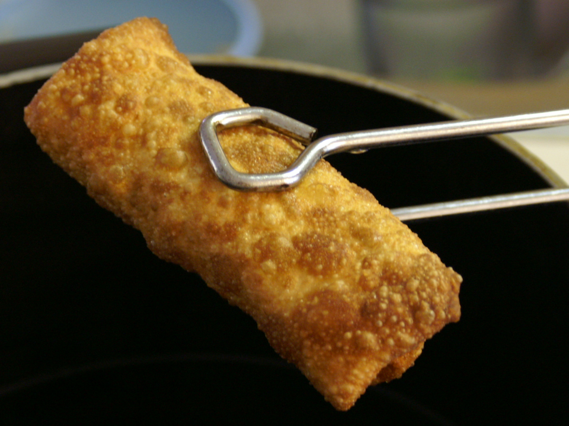

Breakfast Eggrolls
Ingredients and Equipment
- Eggroll Wrappers
- Eggs
- Sausage
- Potatoes (Shredded Hash Browns)
- Cooking oil of your choice (Vegetable)
- Pan for cooking
- Clean board
- Big Bowl!
The Plan
We're going to take the word "egg" in egg rolls far too
seriously here. Its a delicious all in one (or two, or three)
breakfast roll!
The Process
- Chop down the sausage. Smaller sausage mixes in better
- Get your sausage cooked in the pan. Maybe not
all the way because you're leaving it in there
with the eggs afterwards.
- Do you know how to cook your eggs? I sure
hope so, because I don't remember. I can tell
you that I recommend you scramble them for this
- Once the eggs are well prepared you'll want to
toss everything into that bowl
- Get those hash browns crispy! When your hash
browns are ready, toss them in the bowl too
- Mix up the ingredients a bit! Every egg roll should have
plenty of everything inside!
- Place egg rolls on the clean board and wrap up the mix
one after another in the wrappers.
- Clean out the pan and heat some oil at the bottom
- Once the oil is shimmering place the Egg rolls in and
let them fry. You'll want them browned all over!
- Once they're all done, you're good to go!
